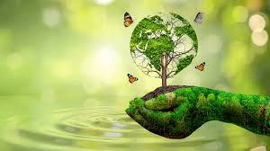

Estilo de Vida
Como Reduzir Plástico do Dia a Dia
Descubra simples estratégias para eliminar plástico descartável da sua rotina e contribuir para um planeta mais limpo. Desde a compra até o descarte, há várias oportunidades para fazer escolhas mais sustentáveis.
Ler Artigo Completo →